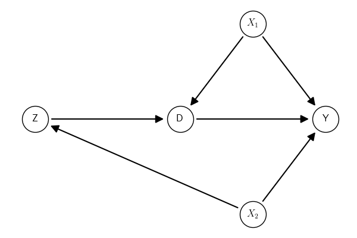

Build
Creating GCM
Suppose we want to create the following Graphical Causal Model (GCM).

The graph object can be created using a string describing the graph and
the class gcm.DAG() from the module gcm of causalinf. There are
many options to use for the string syntax. Any combination of the syntax
options below will work.
If no further information is provided, all variables (nodes) are assumed to be observed.
There are different ways to set the type of variable as Exposure, Outcome, or Latent using a dictionary.
Graph:
Z -> D
X2 -> Y
X1 -> D
X1 -> Y
X2 -> Z
D -> Y
Observed: Z, X2
Exposure: D
Outcome: Y
Latent: X1
But note that resetting the variable types changes all of them, and omitted information assumes that the variables is of the Observed type. For instance:
Arbitraty types can be used. These are used only for plotting. For analysis (identification and estimation), only the four basic ones (Outcome, Exposure, Latent, and Observed) are used.
Bidirected/undirected edges
It is possible to define undirected and bidirected edges as well
with -- and <->. Bidirected edges in the context of causal
inference with DAGs indicate an omitted common cause between the
variables connected by the bidirected arrow. Undirected edges, on the
other hand, in the context of causal inference with DAGs, are used to
represent the skeleton of the DAG or observationally equivalent edges.
That is, they are edges whose direction cannot be decided inferentially
using observational data unless other parametric assumptions are
adopted.
Graph:
Z -> D
X2 -> Y
X1 -> D
X1 -> Y
X2 -> Z
D -> Y
Z2 <-> X2
X1 -- Y
Observed: Z, X1, Z2, Y, X2, D
GCM Object
The Graphical Causal Model (GCM) object has many useful properties.
Nodes:
{'Z', 'X1', 'Z2', 'Y', 'X2', 'D'}
Nodes info:
{'Z': {'role': 'Observed', 'label': 'Z'}, 'X1': {'role': 'Observed', 'label': 'X1'}, 'Z2': {'role': 'Observed', 'label': 'Z2'}, 'Y': {'role': 'Observed', 'label': 'Y'}, 'X2': {'role': 'Observed', 'label': 'X2'}, 'D': {'role': 'Observed', 'label': 'D'}}
Directed edges:
[('Z', 'D'), ('X2', 'Y'), ('X1', 'D'), ('X1', 'Y'), ('X2', 'Z'), ('D', 'Y')]
Bidirected edges:
[(('Z2', 'X2'), ('X2', 'Z2'))]
Undirected edges:
[{'X1', 'Y'}]